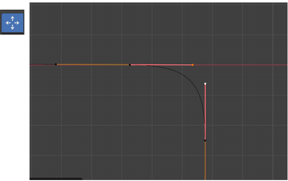

~5 Learning More Advanced Techniques for Beziers~
9/22/2025
Making another handle point: Vector
Changing a Hard Sharp Corner into a Curve
Moving Both Handles at Same Time to Adjust Curvature
Starting Point
We are starting this tutorial, straight off of what we have done in the last tutorial. So, make sure you have been following along. If not then go back and finish the curve up to that point. Your curve should be looking like this now.

Merging Section
If you look at your curve now, and try to move that new circular section away from the straight line, you will find that they will come apart.
So, as you can see by the image above, those two vertices, between our two curve segments, are not exactly merged together, they are just very precisely placed one on top of the other. What we actually want is for these two sections to be merged. But we will be going at merging them a bit differently this time. Instead of just merging the vertices together, we will be working with the two sections. I will describe how this is done, in the paragraphs below.
By the way, if you separated those two vertices, just go back in the Edit-History, and put them back together again.
If you have overlapping points in Blender, as we do with these two points, we can actually cycle through each one of these points, selecting either the top or bottom point. To cycle through them we click one time on the top control point, if you click again, it will select the bottom control point. You can see this, as it will change from a pink control to a yellow control.
Your control on the top of the other point, is pink, and it goes with that circle like curve at the bottom. The yellow controller belongs to that straight line that is coming off of the original curve shape.

Now with the yellow controller showing, we want to hit the X key and Delete Vertices.
Now with that one section gone, we can use the Select tool to marque around these two points, that we are showing in the next image.
Now go to the Sub menu at the top of the View port, and Click on Control Points. We want to select Make Segment. This will create a segment across those two points, and sufficiently merge these two segments.
So, after preforming that procedure, we know that these two segments are attached to one another. And it’s a single path.
Making another handle point: Vector
Now we want to select this point here (in the image below), and make it Vector. We will be working just with the handle end points, while making this change. Making it Vector will cause one handle point to point directly to the previous handle point. Doing this allows us to tessellate things more efficiently.
Tessellate- This is a term in geometry that means to create a pattern repeatedly with polygon shapes, that will fit together without gaps, or overlaps.
Changing a Hard Sharp Corner into a Curve
We next want to change a sharp corner into a curve. We will be working with this corner right here.
To make this change, we want to right-click on this point, which will bring up a context menu. From this Context menu, we want to select Fillet.
You will notice, what Fillet did was to create another point, and add a curved section between the two control points. So, Fillet will Fill it.
The size of this Fillet section, really isn’t that big. So, in my case, it really came in at a nice size. But Blender will choose this size for you, and it isn’t always too great at doing this measurement. So, if we needed to make changes to the size of this Fillet, we could do it in the Last operation dialog-box that shows up at the bottom of the screen. Then we just change the size of the Radius.

Moving Both Handles at Same Time to Adjust Curvature
We can box-select both of these control handles with the Select Tool, we only want to select the handle end-points, if it selects the entire control, just come in again and once again, just try to select the handles end points.
First of all, I want you to notice that the two handle points that we selected above are both pink. So they are of the handle type of Aligned.
Now select the Move Tool, and you will find that we can move both of the handles at the same time to change that curvature. Pull the move tool gizmo, toward the right of the Viewport to create a nice Curve. You will notice that when you do this the handle points will move toward each other, and your curve will get a bit rounder.

Ok, that is about all for this week, next week we will begin working on the top of the Curve.